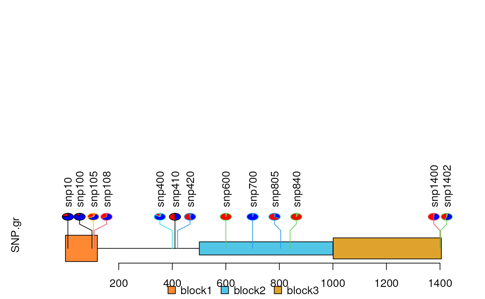

lolliplot.RdPlot variants and somatic mutations
lolliplot(
SNP.gr,
features = NULL,
ranges = NULL,
type = "circle",
newpage = TRUE,
ylab = TRUE,
ylab.gp = gpar(col = "black"),
yaxis = TRUE,
yaxis.gp = gpar(col = "black"),
xaxis = TRUE,
xaxis.gp = gpar(col = "black"),
legend = NULL,
legendPosition = "top",
cex = 1,
dashline.col = "gray80",
jitter = c("node", "label"),
rescale = FALSE,
label_on_feature = FALSE,
lollipop_style_switch_limit = 10,
...
)A object of GRanges, GRangesList or a list of GRanges. All the width of GRanges must be 1.
A object of GRanges, GRangesList or a list of GRanges. The metadata 'featureLayerID' are used for drawing features in different layers. See details in vignette.
A object of GRanges or GRangesList.
character. Could be circle, pie, pin, pie.stack or flag.
Plot in the new page or not.
Plot ylab or not. If it is a character vector, the vector will be used as ylab.
An object of class gpar for ylab, xaxis or yaxis.
Plot yaxis or not.
Plot xaxis or not. If it is a numeric vector with length greater than 1, the vector will be used as the points at which tick-marks are to be drawn. And the names of the vector will be used to as labels to be placed at the tick points if it has names.
If it is a list with named color vectors, a legend will be added.
The position of legend. Possible positions are 'top', 'right', and 'left'.
cex will control the size of circle.
color for the dashed line.
jitter the position of nodes or labels.
logical(1), character(1), numeric vector, or a dataframe with rescale from and to. Rescalse the x-axis or not. if dataframe is used, colnames must be from.start, from.end, to.start, to.end. And the from scale must cover the whole plot region. The rescale parameter can be set as "exon" or "intron" to emphasize "exon" or "intron" region. The "exon" or "intron" can be followed with an integer e.g. "exon_80", or "intron_99". The integer indicates the total percentage of "exon" or "intron" region. Here "exon" indicates all regions in features. And "intron" indicates all flank regions of the features.
Labels of the feature directly on them. Default FALSE.
The cutoff value for lollipop style for the 'circle' type. If the max score is greater than this cutoff value, trackViewer will only plot one shape at the highest score. Otherwise trackViewer will draw the shapes like `Tanghulu`.
not used.
In SNP.gr and features, metadata of the GRanges object will be used to control the color, fill, border, alpha, shape, height, cex, dashline.col, data source of pie if the type is pie. And also the controls for labels by name the metadata start as label.parameter.<properties>, and for node labels by name the metadata start as node.label.<properties>, such as label.parameter.rot, label.parameter.gp. The parameter is used for grid.text.or plotMotifLogoA. The metadata 'featureLayerID' for features are used for drawing features in different layers. The metadata 'SNPsideID' for SNP.gr are used for determining the side of lollipops. And the 'SNPsideID' could only be 'top' or 'bottom'.
SNP <- c(10, 100, 105, 108, 400, 410, 420, 600, 700, 805, 840, 1400, 1402)
x <- sample.int(100, length(SNP))
SNP.gr <- GRanges("chr1", IRanges(SNP, width=1, names=paste0("snp", SNP)),
value1=x, value2=100-x)
SNP.gr$color <- rep(list(c("red", 'blue')), length(SNP))
SNP.gr$border <- sample.int(7, length(SNP), replace=TRUE)
features <- GRanges("chr1", IRanges(c(1, 501, 1001),
width=c(120, 500, 405),
names=paste0("block", 1:3)),
color="black",
fill=c("#FF8833", "#51C6E6", "#DFA32D"),
height=c(0.1, 0.05, 0.08),
label.parameter.rot=45)
lolliplot(SNP.gr, features, type="pie")
